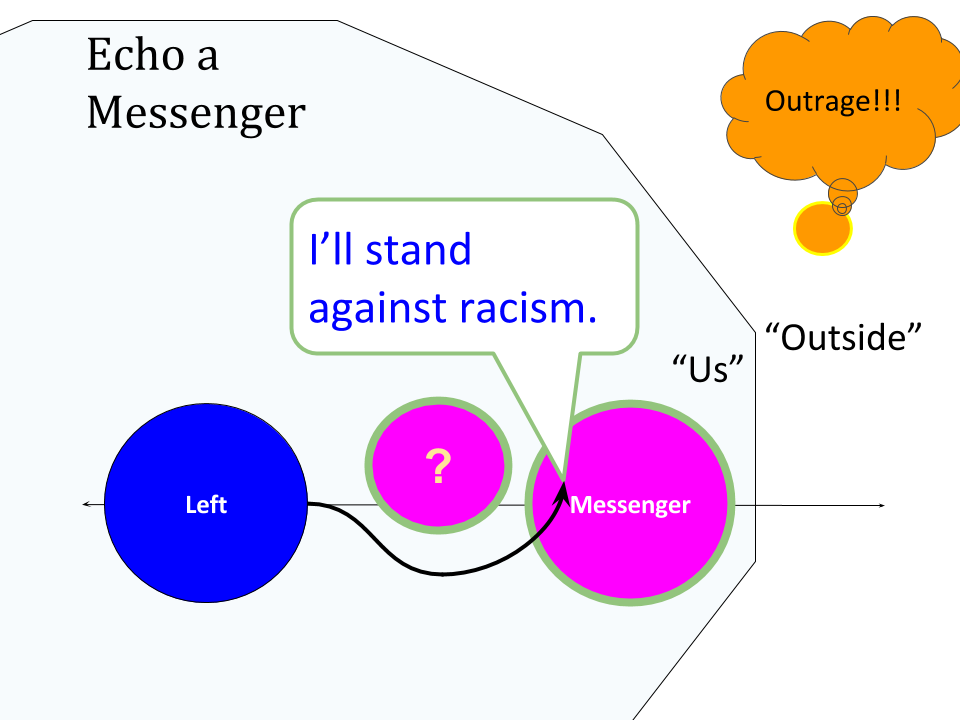
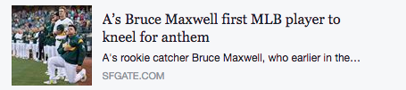

Quick Guide: Take a Knee
Posts to initiate, replies to other frames, and openings for dialogue. Posts and replies are aimed at creating an atmosphere, conscious of everyone listening, while dialogues focus on one-to-one interactions.
The Progressive Guide to Social Media aims to teach many principles of framing, nonviolent communication, radical civility, and other ways to improve your social media. From the guide, we're developing issue-by-issue examples. The examples are the "how," the guide explains the why. The guide is intended to educate, and the example pages like this one provide resources that you can share with moderate and conservative friends in your social circles. —more—
These guides are produced rather informally by people at Cognitive Politics: a Communications Workbook for Progressives and Social Media Approaches for Respect and Tolerance and we'd love for you to get involved!
Plan, Prepare, Frame
Issue frame: racism. Conversation frame: America is unified ...and we listen if we disagree; Trump is alone, even people who donated to him are united that the president shouldn't bully individual Americans who quietly protest.
Plan:: Audience:: Outrage/Trolling
This story starts like many others: someone (Colin Kaepernick) is trying to get us to talk about racism, and Trump jumps in with something outrageous — Trump is trying to troll us, that is to put bait on a hook and get us to bite, arguing about the wrong thing, worsening rather than bridging the divisions in our society.
PS: Trolling is a technique. Fishing with outrages designed to get the left to react in a way that loses votes. Don't take the bait — learn counter-techinques. Calling Trump a troll to his supporters is not an effective counter-technique.
Kaepernick said he is against police brutality and racism. He took steps to respect soldiers: kneeling, not sitting, specifically to show respect. And Trump came by and made it about Trump and patriotism. Plan: isolating trolls means not taking the bait, staying in your frame, and countering them for their misbehavior from a centrist position. See Tension: Isolating Trolls and Keeping Your Voice.

Plan:: Audience:: Segmentation & Goals
Not left -vs- right, but Trump vs sports, Trump vs everyone.
1. Patriotism and Unity
Many moderates and less political voters are upset that our country is dividing. Who they blame for that division might well decide the next elections. Trump is trying to divide Americans, distracting us from real issues of racism and distracting us from everything else: how can we make that backfire?
We need to carefully avoid making this about leftist protestors -vs- everyone. Make it sports (everyone) -vs- just Trump. Frame the conversation as everyone against Trump, not left against right; as an issue where Trump supporters are abandoning him. How to is easy: help articles of sports stars abanding Trump go viral.
Electoral Leverage: high! This could backfire very badly, with loyalty to sports leveraged against loyalty to Trump. Facts don't work when we feel like we are on different teams, and this could help us feel like we are one team.2) Police brutality and racism
Once the argument about patriotism is out of the way (quite a challenge) this may be an opportunity to talk about racism. Or, it may not be a good opening. I haven’t seen much talk about police brutality coming from the current fracas. But we should look for ways to get back to the real issues to the extent we can.
Electoral Leverage: low. Hard to be heard at this time. Kaepernick taking a knee is not a strong example of racism, which is (not suprisingly) a better place to start that conversation. Please share ideas that seem to work. We did find one good example that fits this conversation..Warning: Talk about patriotism or racism in any one conversation; not both! Mixing these conversations is how the trolls win. Post football players and other messengers upset with Trump's bullying ways, and post Kaepernick and allies thoughts on why they started this: but don't expect one conversation to engage both issues, and don't expect people to hear conversations about racism until you open the door by disarming the landmines about patriotism.
Active Listening / Steelman Argument from the right
Not-troll conservatives are often describing a desire that we get along better, that we stop being divided as a country. I think this is something we can agree with; it could be a powerful moment for that. Share that you feel the same way to help open conversations.
Remember that their media is trying to hype this up and maximize the conflict, so they’re reading a lot from that perspective. Make this the “Yes, and …” part, and share that Kaepernick chose to kneel rather than sit in order to be respectful. Ask why and when this went from Kaepernick and one other player very quietly expressing themselves and became a national issue. Did Kaepernick curse anyone out, or make a stink? What did he do, when did he do it, that wasn't merely a small disagreement but an issue worth tearing the country apart over? If he believes that racism and police brutality are major issues, how should he give voice to that?
Dialogue Leverage: we have been desperate for unity. Now conservatives are feeling that too. Start conversations.
Posts to Create Atmosphere
Messengers! (definition)
Much of modern politics is about division. Finding the right messengers is an and easy way to short-circuit these divisions. Most of the sports-related messengers are pretty mild: they are standing up for the right to protest, and light on joining the original message. Still, first steps are usually the hard ones. So start here, and then follow up with articles on racism.
The mildest frame — and thus perhaps best for wavering Trump voters — is simply that some of Trump’s past supporters have had enough.
Sports-lovers who voted for Trump are unhappy, feeling their loyalties torn. Many people care about sports much more than politics. For left-leaning activists this doesn’t feel important, but it might be more leverage than we almost ever have. A powerful starting place to lower the boundaries that get in the way of saners conversations and saner votes.
Start here! Sports -vs- Trump
Core suggestion: post one each day, starting with the mildest openings, without adding an introduction that changes the voice — these don't win arguments but change the atmosphere.
- Terry Bradshaw, modeling stepping gently away from Trump. Copy to FB
- Steve Kerr (NBA) blasts Trump
- “Trump Can’t Divide This” on Dallas Cowboys — an amazing opening.
- A long Sports Illustrated article on Kaepernick as a person that basically calms things down, and creates a nice environment against trolling.
- Baseball joins in: this includesa Great photo of hand on heart while kneeling, that looks like patriotism under duress, instead of being "against" something.
 - This unfortunately says “Occupy Democrats” but is a sportscaster from Trump’s core demographic of somewhat older white men, a veteran, crushing Trump.
Messenger: Country Music
It’s good to be up front: these unity messages are not Kaepernick’s original message, which is getting lost, and if you have an idea that can pull support away from Trump as much as sports teams unifying against him, and at the same time get Kaepernick’s message out, please share it. These messengers may be an opening, a first step, in an environment where usually no progress is made. these are the opening that is required to make Trump’s divisive distractions backfire, creating space for the real message if anything can. Start with these anti-trolling social media posts to create space, then go back to the voices of the original protest.
Note that there are three very different voices recommended here. Let messengers and witnesses speak for themselves, without adding your voice. When Trump commits an outrage, when he is trolling, speak with, for and as everyone — isolate him, don't let him represent conservatives against the left. When it is time for you to speak, stick to your frame, without saying "no" or
Observations
Another type of post to start with is to simply describe your view or your frame, without arguing.
- Observations:: What is happening?
Share plain, non-editorial observations of the racism that #takeaknee is protesting, or share messengers favored by conservatives, like Air Force Academy deals with horrible racism in the right way.
We talk about fake news, privilege and filter bubbles a lot, but then forget that it is real. Many white people really don't know how bad racism is. Yeah, it's lazy, sloppy, they have no good excuse... but this is politics, so pay attention to the bad excuses.
- Observations:: I statements
Find yours. I like: To be clear #TakeAKnee is about protesting institutionalized racism...
Reply — Quick Responses
Our frame, our wish, is to talk about racism. When false accusations are floated, calm them.
Trump moved the dialogue to one about the flag and military. We want his tactic to backfire, to cost Trump votes, and then to get back on topic when we can. So these posts mostly aim to muffle distractions rather than debate them.
Re: This is divisive or anti-military.
Text you can use: Kaepernick chose to kneel rather than sit specifically to show respect, as a gesture to the military, after talking with Green Beret Nate Boyer: ”Soldiers take a knee in front of a fallen brother's grave, you know, to show respect.” Now, can America finally stop running in fear every time someone wants us to talk about racism? And share this.
Re: This is anti-military
Or this, which seems especially good for holding the center and isolating angry attacks, and has a good picture for facebook shares: "Major Danny Sjursen in The American Conservative says to Leave Veterans and Soldiers Out of the Anthem Debate." Or a conservative ranting about nonveterans using wounded veterans as props.
Note: I wouldn't contradict if a veteran or soldier speaks for themselves. But when someone like Trump speaks for others, it's good to counter from a centrist position.
Communication — 1:1 Dialogue
Start with asking, then listen, reflect, answer, and share.
Radical civility, Nonviolent Communication, Powerful NonDefensive Communication and many other approaches can lead to surprising openings and connections. They mostly begin with listening, rather than quick resources appropriate for this list. Take a workshop or class! Join an online community that practices and teaches radical civility,
Emphasize areas of agreement for openings
Most Americans are agreed that we do not want police brutality and racism. We disagree about whether this is a rare bad apple or a systemic problem, what to do about it, and how to solve it…
What questions help open this conversation up?
Look for open questions: "What would it be like if you thought you had to talk to your kids like black parents have to warn theirs?"
Getting Conversations back on track.
This started with a frame of engaging racism, thrown off track by mostly by Trump. So, if someone is upset that kneeling is disrespectful, acknowledge that, say you don’t find it so but see why they might — avoid that rabbit hole. Then ask or share something back on track, such as how do they think athletes should protest racism instead.
Make specific requests. (NVC technique)
Watch 13th together, a documentary about the prison system that includes conservative voices. Note that changing minds in online conversations is quite rare. Having a calm conversation that ends with a "maybe" about watching a documentary together, even if that never happens, is one thousand times better than the average political online conversation. Go slow but move forward!
Appendix
For teachers: Teaching Tolerance in classrooms.